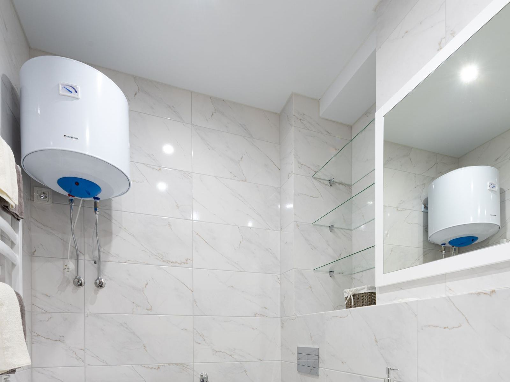

Electric water heaters fail in a few very specific ways, and the symptom usually tells you where to look. No hot water anywhere suggests a tripped breaker, a tripped high-limit reset, or a failed upper element or upper thermostat, because the upper side controls when the lower side gets power. A few minutes of hot water followed by lukewarm points to the lower element or lower thermostat. Water that comes out scalding points to a thermostat stuck closed or an element shorted to the tank, which is also what trips the red reset button. Those are the calls we answer most in Wilmington, DE, and nearly all of them are fixable.
Wilmington Water Heater tests electric heaters with a meter, not a hunch. With power confirmed off, our technicians measure element resistance and look for a short to the tank, a common failure that can keep tripping the high-limit. Then, following careful live-testing procedure, we verify voltage at the thermostats and watch how power moves from the upper side to the lower side. We look for scorched wires, melted insulation, and loose terminal screws, since a loose connection can heat up enough to damage the thermostat and the wiring around it. If the reset button has tripped, we find out why before resetting it, because a high-limit that trips is doing its job.
Most electric water heater repairs are finished in one visit. We replace burned-out elements (draining the tank first and refilling it completely before power goes back on, since an element energized in open air burns out in seconds), replace upper and lower thermostats and high-limit switches, repair scorched wiring and loose connections, and flush out sediment that is burying the lower element. When the tank is leaking or the heater has passed about twelve to fifteen years, we tell you honestly and walk you through replacement. New installations include confirming that the circuit, breaker, and wire size match the heater, plus an expansion tank, drain pan, and seismic straps wherever code calls for them. We can also talk through a heat pump water heater if lower operating costs appeal to you. Call (302) 204-4823 and we will get your hot water back.
What homeowners call us about most is Water Heater Repair in Wilmington and Water Heater Installation in Wilmington. Either is a good place to start.

Signs You Need Electric Water Heater Services in Wilmington
A heater that is starting to struggle rarely hides it for long, and the clues are easy to spot once you know them. These are the red flags our technicians see most often before a breakdown:
- A shower that turns lukewarm much sooner than it used to
- Water that comes out scalding hot
- Water dripping from an element gasket or pooling under the tank
- Browned wiring or a burnt odor from behind the access cover
- The water heater breaker tripping over and over
- A heater that works after a reset, then quits again
- Cold water everywhere, even after waiting
- A hissing or sizzling noise near the lower element
A Slow Leak Never Stays Slow
Most water heater failures start small: a popping sound from sediment, a damp spot under the drain valve, or a shower that goes lukewarm a few minutes sooner each week. At the first hint of a problem, reach out to Wilmington Water Heater at (302) 204-4823 and we'll take a look.
Talk to Us About Electric Water Heater Services
Our experienced technicians are standing by to help.
Call (302) 204-4823 NowElectric Water Heater Services FAQ
The Benefits of Professional Electric Water Heater Services
Two things make electric water heater repair trickier than it looks: the power involved and the overlap between symptoms. These heaters run on 240-volt circuits, and the thermostats and elements are wired to terminals that stay live unless the breaker is off and verified. On the diagnostic side, a heater that will not heat might have a failed element, a bad thermostat, a tripped reset, or a wiring problem, and a reset that keeps tripping is a warning, not an annoyance. Guessing gets expensive fast.
Professional service gets you the right fix the first time and a safe heater afterward. Instead of guessing, we meter each element and thermostat, check for shorts to the tank, and inspect every wire and terminal for heat damage. Every repair includes a proper drain and refill, followed by an amp-draw check once power returns. When replacement makes more sense, we confirm the breaker size and wire gauge match the new heater and install the expansion tank, drain pan, or seismic straps your code requires. You end up with hot water you can count on.
What to Expect From Our Team
Every visit follows a step-by-step method built around testing first and replacing parts only when the readings call for it. Here's a look at each step our team takes:
Circuit & Component Testing
The breaker and supply voltage are checked first, then we meter both elements for resistance and shorts to ground, both thermostats, and the high-limit switch.
What Failed and What It Costs
No surprises on the bill. We explain the fault, quote the fix up front, and let you know if replacement is the better value before you spend anything.
Element & Thermostat Repair
Common elements and thermostats are on the truck, so most repairs happen right then, including wiring fixes and a sediment flush when the lower element is buried.
Tested Before We Leave
Before we leave, we watch the heater run, measure amp draw on each element, and confirm the thermostats hand off correctly.
Repair or Replace? Let's Figure It Out.
Call Wilmington Water Heater to talk through your situation with an experienced technician.
Tap to Call (302) 204-4823Simple Ways to Extend Your Water Heater's Life
Most of the failures we see could have been delayed for years with basic upkeep. Start with these practical measures our team relies on:
- Treat a tripped high-limit as a warning sign, not a nuisance
- Have the sacrificial anode inspected every three to five years
- Keep the thermostats set around 120 degrees to save energy and reduce scalding risk
- Check the T&P relief valve annually, and call if it drips afterward
- After any draining, refill the tank fully and run a hot faucet before restoring power
- Consider a water softener if you have hard water, since it slows sediment and scale on the elements
- Flush the tank regularly to keep minerals from piling up around the lower element
Should You DIY or Call a Pro?
The line between a safe DIY check and a risky repair is usually the moment you need to open a gas fitting, a vent connection, or an electrical cover. Here's how the two approaches stack up:
| Factor | DIY Attempt | Hiring a Pro |
|---|---|---|
| Finding the Fault | Guess between elements, thermostats, and breaker | Every element and thermostat metered |
| Shock Hazard | Working near 240V without verifying it is off | Power verified off before any work |
| Element Replacement | Tank not fully refilled before power-up | Proper gasket seal and full refill |
| Reset Button | Push reset and hope it holds | Reset stays set because the fault is gone |
| Sediment | Minerals left to shorten element life | Honest read on the tank's remaining life |
| Result | Element fails again within months | Root cause fixed and verified |
Get Electric Water Heater Services Help Today
Cold showers and damp floors don't get better on their own. Wilmington Water Heater can have a technician headed your way soon.
Tap to Call (302) 204-4823Communities We Cover
We serve Wilmington and its neighboring towns for electric water heater services, from quick same-day repairs to planned installs.